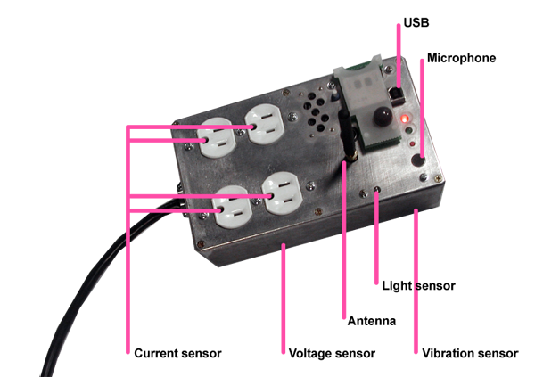

Project Introduction
We have used the Plug developed by the Responsive Environments Group (MIT Media Laboratory) for this project. We have made an extensive analysis of the voltage-current data collected by the Plug, in the context of Pattern Recognition. The Plug is a power strip augmented with a micro controller, four independent outlets with current sensors and digital switches, an input voltage sensor, a light sensor, a vibration sensor, a microphone, an antenna, and a few other functions that will not be mentioned because they are irrelevant to this work. It is important to mention that each Plug can be set as a node in a sensor network, because this property allows any Plug to compare patterns extracted from data collected by any other Plug in the network.
The following image provides a simple description of the Plug. Detailed information about the Plug can be found in Josh Lifton's research website.
